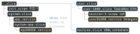
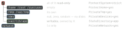

linux · folio
In one line: systemd (PID 1) turns unit files into a transaction of jobs on two
independent axes — requirement (Wants, Requires: what starts) and
ordering (After, Before: when) — and gives each service its own
cgroup to limit, log and kill all its processes.
Download PDF Print view LaTeX source


Units — and a dash in the name is a slash
Every unit is typed by its suffix (.service, .mount, .slice … eleven kinds) and its name is an address: /srv/data → srv-data.mount; the root / is a lone dash, hence -.mount and the root cgroup -.slice; system-app.slice sits inside system.slice; foo-bar.service merges drop-in *.confs from foo-bar.service.d/ and foo-.service.d/. A real dash must be escaped: /dev/disk/by-label/x → dev-disk-by\x2dlabel-x.device. Layers, first match wins: /etc (admin) > /run (runtime; generators turn fstab into .mounts) > /usr/lib (package: override, never edit). Symlinked to /dev/null: masked — unstartable, even as a dependency. # comments only at line start (KEY=v #x keeps “#x”); an empty KEY= resets a list.
How tightly X holds Y — loose to tight
Wants= | pulls Y in; Y’s failure is ignored — the recommended default |
Requires= | + Y’s failed start fails X, only if X is also After= Y; stopping Y stops X |
Requisite= | never starts Y: Y must already be up, or X fails at once |
BindsTo= | + Y going away for any reason (crash, unplugged disk) stops X |
PartOf= | only Y’s stop / restart reaches X — one way, nothing else |
Upholds= | (249) the reverse pull: while X is up, a dead Y is started again |
Conflicts= | starting one stops the other |
OnFailure= | listed units start when X fails · OnSuccess= (249) |
- Ordering is orthogonal: no
After=/Before=⇒ parallel; stops run in inverse order, before starts. Every service silently getsAfter=basic.target+Conflicts=shutdown.target: that is how shutdown stops it. network.targetis “only very weakly defined”:Wants=+After=network-online.target. A cycle is broken by deleting a job, often an innocent one’s.Condition*=false skips;Assert*=fails.
Type= — the moment a start counts as done

At its dot systemctl start returns and After= units begin. simple is “started” before the binary even loads — a mistyped path still reports success; exec (the man page’s pick) catches that, notify waits for real readiness.
Restart= — which exits restart

Clean = exit 0, or SIGHUP, SIGINT, SIGTERM, SIGPIPE (not for oneshot). Never after systemctl stop. RestartSec= 100 ms; back-off (254), jitter (262).
Stopping — the cgroup is the process list
ExecStop= → SIGTERM to every process in the cgroup (KillMode=control-group, the default: a nohup cmd & or double-forked child dies too; process, none let them escape) → TimeoutStopSec 90 s → SIGKILL — the 90 s of the shutdown line A stop job is running for … (12s / 1min 30s). ExecStopPost= runs even after a crash, told why in $SERVICE_RESULT. No WATCHDOG=1 within WatchdogSec= → SIGABRT. ExecStart= is not a shell line — no pipes, no >; prefix | (258) asks for one.
PID 1, which is not allowed to die
If PID 1 exits, the kernel panics (Attempted to kill init!). So a crashed systemd hangs
the machine on purpose: systemd.crash_action=freeze is the default (or reboot, poweroff, a crash shell). kill -TERM 1 does not stop it either — it serialises its state, re-executes itself and reads the state back, like systemctl
daemon-reexec: how an upgraded systemd takes over without a reboot. The name: a system daemon, lower case; the project’s own joke calls it “System Five Hundred” — D is Roman 500, which “clarifies the relation to System V”.
systemctl, systemd-analyze — the traps
enable only makes the [Install] symlinks (WantedBy= → a .wants/ link); it does not start (--now does) · edit writes a drop-in; to replace the command, first an empty ExecStart= — two get the unit refused · systemd-analyze blame counts waiting as start time (“might be misleading”); critical-chain shows who waited for whom.
User manager, transient units, images
systemctl --user talks to user@1000.service; it ends with the last session unless loginctl enable-linger (then: from boot, past logout). systemd-run cmd: a throwaway (transient) service; run0 (256) is the same binary. sysext (248) / confext overlay /usr, /etc from images; soft-reboot: new userspace, same kernel.
Sockets first — the kernel’s buffer replaces ordering

PID 1 binds every listening socket before any daemon runs, then starts them all at once: a client writing while syslog is still starting just queues in the socket buffer — no After= needed. An old idea: inetd did it per connection, Apple’s launchd for every daemon. Accept=yes is inetd mode (an app@.service per connection, max 64); Accept=no (default) hands over the listener as fd 3, still bound across restarts.
sd_notify, the fd store, templates
sd_notify is one datagram of KEY=VALUE lines to the socket named in $NOTIFY_SOCKET — a stable protocol, a few lines without libsystemd: READY=1 · RELOADING=1 · STOPPING=1 · STATUS= · WATCHDOG=1. FDSTORE=1 parks open fds in PID 1, handed back at the next start: a restart (or soft-reboot) that keeps its connections. app@.service + start app@8080 ⇒ %i=8080; %u, %h are the manager’s user — root in a system unit, not User=.
Timers — cron, minus its surprises
A .timer starts its same-named service. Still running when it fires ⇒ no second copy; Persistent=true runs an OnCalendar= job missed while the box was off; RandomizedDelaySec= spreads a fleet’s 3 a.m. stampede. AccuracySec= (1 min) is deliberate slack: all timers fire at one host-specific, stable point of that window, so the CPU wakes once for many.
The cgroup tree, resources, delegation

Services and scopes are the leaves. CPUWeight= 1–10 000 (100, or idle): a share under contention · CPUQuota=150% = 1.5 CPUs · TasksMax= (15 % of the pid limit), live via set-property. Delegate=yes: systemd keeps out of the subtree (one writer per cgroup); the service moves itself into a sub-cgroup.
What a sandboxed service sees

Each row is a namespace trick: the service gets its own mount (and network) namespace. NoNewPrivileges=: execve ignores setuid · SystemCallFilter=@system-service: other syscalls SIGSYS. DynamicUser= (232) leases a UID from 61184–65519 (0xEF00–0xFFEF: above the users distributions hand out, below 65534 nobody) while the service runs, and implies most rows above. A recycled UID must not inherit files, so state lives in /var/lib/private/app, behind a root-only 0700 directory. systemd-analyze security: 0–10, high = exposed. Secrets: Environment= is “exposed to unprivileged clients via D-Bus”; LoadCredential= (247): read-only, unswappable, only the unit’s user; …Encrypted= (250): sealed to TPM2 / a host key.
journald — logs as fields, some unforgeable
stdout / stderr become entries of fields (MESSAGE, _PID, _SYSTEMD_UNIT …). A leading underscore marks a trusted field: journald adds it, client code cannot alter it — a process can lie in MESSAGE, not in _PID. Forward Secure Sealing: journalctl --setup-keys leaves a sealing key on the host that moves on, one way, every 15 min, and a verification key kept elsewhere — an intruder can rewrite only the current window unnoticed by --verify: a 2013 cryptography paper (“seekable sequential key generators”) shipped in the log daemon. Persistent storage: default since 259; disk 10 % used / 15 % free (≤4 G); 10 000 messages / 30 s per service.
Releases
Further reading
- Rethinking PID 1 (2010) — the essay that started it: why socket activation makes ordering unnecessary, and what it took from inetd and launchd
- Dynamic Users with systemd (2017) — why the UID range is 61184–65519 and how
/var/lib/privatesurvives UID recycling - Practical Secure Logging: Seekable Sequential Key Generators (2013) — the cryptography paper behind
journalctl --setup-keys, which became part of journald - Control Group APIs and Delegation — the single-writer rule, and what a delegated service must do with its own subtree
- The Biggest Myths (2013) — the early arguments over systemd, answered point by point